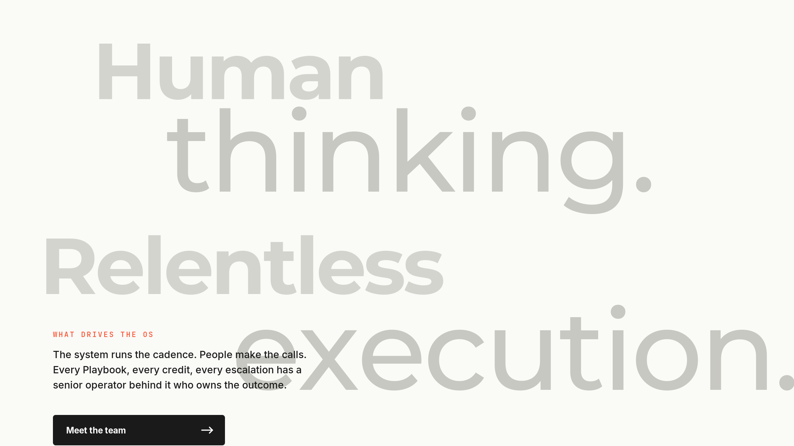
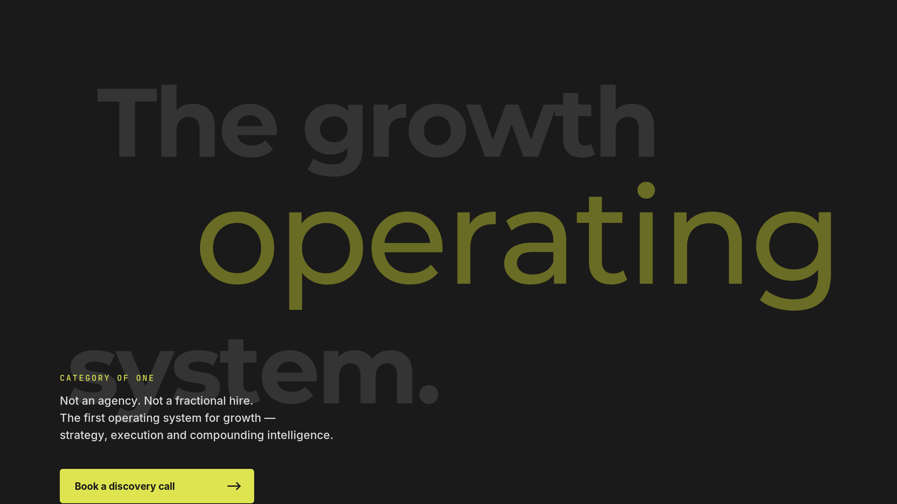

Three background-statement treatments,
built on Brand Guide v2.
Full-bleed PNGs you can drop behind any section of the one-pager — each a standalone statement that carries the positioning visually before the body copy asks for attention. Weight contrast (Montserrat Black + ExtraLight) replaces the italic serif from the instrument.com reference, keeping us inside the brand system.

Human thinking. Relentless execution.
Lowest-contrast, quietest variant. Sits best between the hero and the plans block as a "what drives the OS" pause. Soft-grey statement against the paper base keeps it unobtrusive until the eye lands on the body block.
Best slot: after hero, before plans.
DISPLAY: #D4D4CF / #C8C8C2
BODY: #1A1A1A (ink)
EYEBROW: #FC4E2B (orange)
CTA: ink button, white text
{kind=link}

Growth that compounds. Visibly.
Most brand-forward variant. Uses the companion tagline directly. Works as a break between the three-plans row and the "trusted by" logos, or as the closer before the footer — lime as a signal that something compounds.
Best slot: before "trusted by" / before footer CTA.
DISPLAY: muted olive (rgb 150/160/40)
BODY: #1A1A1A (ink)
EYEBROW: dark olive
CTA: ink button, lime text

The growth operating system.
Strongest statement. Names the category in three lines, lime accent on the word that matters ("operating"). Built for the closing CTA frame — the last thing the visitor reads before they scroll to the footer and book a call.
Best slot: closing CTA band. Highest-impact placement.
DISPLAY: rgb(52/52/52) light grey
ACCENT: muted lime (rgb 105/108/36)
BODY: rgb(220/220/220) near-white
EYEBROW: #DEE450 (lime)
CTA: lime button, ink text
{kind=link}
Dev notes for implementation
- Use case: these PNGs are backgrounds, not standalone hero images. Drop behind a section at full-bleed, then layer the actual section HTML on top. The text baked into the PNG is the display statement; live section HTML carries links, anchors, and analytics.
- Or, live version: if the dev prefers live text (for accessibility, SEO, and responsive reflow), these PNGs are reference-only — the
concepts/statement-bg.htmlfile shows how to rebuild the same layout in pure HTML. Accessibility-preferred approach. - Typography swap: weight contrast (Montserrat Black 900 + ExtraLight 200) stands in for the italic serif used in the instrument.com reference. This keeps us 100% on-brand with Guide v2. If you want the actual italic-serif look, we can add Playfair Display as a brand exception — say the word.
- Overlap intentional: on each variant the display statement runs underneath the body block on purpose — the visual layering is the whole point of the treatment. If that reads as too busy at your viewport size, trim the last display line or raise the body block.
- Still to come if you want them: tool / process icons (Batch 02), replacement illustrations for Step 03 and the gear graphic (Batch 03), dashboard mockup tile (Batch 04).